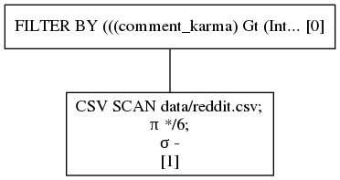
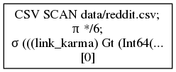

Predicate pushdown
Predicate pushdown is an optimization Polars does that reduces query times and memory usage. A predicate is database jargon for applying a filter on some table and thereby reducing number the number of rows on that table.
So let's see if we can load some Reddit data and filter on a few predicates.
from pypolars.lazy import *
# A scan is a lazy read. This means nothing happens.
reddit = pl.scan_csv("data/reddit.csv")
reddit = (
reddit.filter(col("comment_karma") > 0) # only positive comment karma
.filter(col("link_karma") > 0) # only positive link karma
.filter(col("name").str_contains(r"^a")) # filter name that start with an "a"
)
If we were to run this query above, nothing would happen! This due to the lazyness, nothing will happend until specifically requested. This allows Polars to see the whole context of a query and optimize just in time for execution.
Execution is requested by the .collect method. This would query all available data. During writing/ optimizing/ checking
your query this is often not what you want. Another method that calls for execution is the .fetch method. .fetch takes
a parameter n_rows and tries to 'fetch' that number of rows at the data source (no guarantees are given though).
So let's "fetch" ~10 Million rows from the source file and apply the predicates.
reddit.fetch(n_rows=int(1e7))
shape: (61503, 6)
╭──────────┬───────────────────┬─────────────┬────────────┬───────────────┬────────────╮
│ id ┆ name ┆ created_utc ┆ updated_on ┆ comment_karma ┆ link_karma │
│ --- ┆ --- ┆ --- ┆ --- ┆ --- ┆ --- │
│ i64 ┆ str ┆ i64 ┆ i64 ┆ i64 ┆ i64 │
╞══════════╪═══════════════════╪═════════════╪════════════╪═══════════════╪════════════╡
│ 77860 ┆ aquarin ┆ 1137474000 ┆ 1536528294 ┆ 150 ┆ 11 │
├╌╌╌╌╌╌╌╌╌╌┼╌╌╌╌╌╌╌╌╌╌╌╌╌╌╌╌╌╌╌┼╌╌╌╌╌╌╌╌╌╌╌╌╌┼╌╌╌╌╌╌╌╌╌╌╌╌┼╌╌╌╌╌╌╌╌╌╌╌╌╌╌╌┼╌╌╌╌╌╌╌╌╌╌╌╌┤
│ 77974 ┆ aadvaark ┆ 1137301200 ┆ 1536528294 ┆ 26 ┆ 47 │
├╌╌╌╌╌╌╌╌╌╌┼╌╌╌╌╌╌╌╌╌╌╌╌╌╌╌╌╌╌╌┼╌╌╌╌╌╌╌╌╌╌╌╌╌┼╌╌╌╌╌╌╌╌╌╌╌╌┼╌╌╌╌╌╌╌╌╌╌╌╌╌╌╌┼╌╌╌╌╌╌╌╌╌╌╌╌┤
│ 78004 ┆ apoisel ┆ 1137301200 ┆ 1536497404 ┆ 42 ┆ 2549 │
├╌╌╌╌╌╌╌╌╌╌┼╌╌╌╌╌╌╌╌╌╌╌╌╌╌╌╌╌╌╌┼╌╌╌╌╌╌╌╌╌╌╌╌╌┼╌╌╌╌╌╌╌╌╌╌╌╌┼╌╌╌╌╌╌╌╌╌╌╌╌╌╌╌┼╌╌╌╌╌╌╌╌╌╌╌╌┤
│ 78041 ┆ aonic ┆ 1137301200 ┆ 1536497404 ┆ 2931 ┆ 2095 │
├╌╌╌╌╌╌╌╌╌╌┼╌╌╌╌╌╌╌╌╌╌╌╌╌╌╌╌╌╌╌┼╌╌╌╌╌╌╌╌╌╌╌╌╌┼╌╌╌╌╌╌╌╌╌╌╌╌┼╌╌╌╌╌╌╌╌╌╌╌╌╌╌╌┼╌╌╌╌╌╌╌╌╌╌╌╌┤
│ ... ┆ ... ┆ ... ┆ ... ┆ ... ┆ ... │
├╌╌╌╌╌╌╌╌╌╌┼╌╌╌╌╌╌╌╌╌╌╌╌╌╌╌╌╌╌╌┼╌╌╌╌╌╌╌╌╌╌╌╌╌┼╌╌╌╌╌╌╌╌╌╌╌╌┼╌╌╌╌╌╌╌╌╌╌╌╌╌╌╌┼╌╌╌╌╌╌╌╌╌╌╌╌┤
│ 15814987 ┆ alexzee2 ┆ 1351228286 ┆ 1536588902 ┆ 526 ┆ 993 │
├╌╌╌╌╌╌╌╌╌╌┼╌╌╌╌╌╌╌╌╌╌╌╌╌╌╌╌╌╌╌┼╌╌╌╌╌╌╌╌╌╌╌╌╌┼╌╌╌╌╌╌╌╌╌╌╌╌┼╌╌╌╌╌╌╌╌╌╌╌╌╌╌╌┼╌╌╌╌╌╌╌╌╌╌╌╌┤
│ 15815549 ┆ aavy ┆ 1351231221 ┆ 1536498711 ┆ 570 ┆ 12173 │
├╌╌╌╌╌╌╌╌╌╌┼╌╌╌╌╌╌╌╌╌╌╌╌╌╌╌╌╌╌╌┼╌╌╌╌╌╌╌╌╌╌╌╌╌┼╌╌╌╌╌╌╌╌╌╌╌╌┼╌╌╌╌╌╌╌╌╌╌╌╌╌╌╌┼╌╌╌╌╌╌╌╌╌╌╌╌┤
│ 15815591 ┆ airplanechampagne ┆ 1351231470 ┆ 1536588904 ┆ 1493 ┆ 2498 │
├╌╌╌╌╌╌╌╌╌╌┼╌╌╌╌╌╌╌╌╌╌╌╌╌╌╌╌╌╌╌┼╌╌╌╌╌╌╌╌╌╌╌╌╌┼╌╌╌╌╌╌╌╌╌╌╌╌┼╌╌╌╌╌╌╌╌╌╌╌╌╌╌╌┼╌╌╌╌╌╌╌╌╌╌╌╌┤
│ 15815810 ┆ atomthebroken ┆ 1351232817 ┆ 1536588905 ┆ 5 ┆ 53 │
├╌╌╌╌╌╌╌╌╌╌┼╌╌╌╌╌╌╌╌╌╌╌╌╌╌╌╌╌╌╌┼╌╌╌╌╌╌╌╌╌╌╌╌╌┼╌╌╌╌╌╌╌╌╌╌╌╌┼╌╌╌╌╌╌╌╌╌╌╌╌╌╌╌┼╌╌╌╌╌╌╌╌╌╌╌╌┤
│ 15815882 ┆ ahndroo ┆ 1351233206 ┆ 1536588905 ┆ 43 ┆ 12 │
╰──────────┴───────────────────┴─────────────┴────────────┴───────────────┴────────────╯
Above we see that from the 10 Million rows, 61503 rows match our predicate.
Break it down
In Polars we can visualize the query plan. Let's take a look.
reddit.show_graph(optimized=False)

The astute reader maybe would notice that our query is not very optimal because we have 3 separate FILTER nodes. That means that after every FILTER a new DataFrame is allocated, which will be input to the next FILTER and then deleted from memory, that must be redundant. And you know what.. He/she is right, the predicates should be combined, we should have written this query:
reddit_2 = reddit.filter(
(col("comment_karma") > 0)
& (col("link_karma") > 0)
& (col("name").str_contains(r"^a"))
)
That would translate to:
reddit_2.show_graph(optimized=False)

As we can see the predicates are combined. This would lead to less copying of data
In comes optimization
Polars tries to save that mental overhead from the query writer and combines predicates for you. Besides that, it pushes predicates down to the scan level! Let's see how our optimized query looks.
reddit.show_graph(optimized=True)

It may be hard to see, but what is clear is that there is only a single node; the CSV SCAN. The predicate filtering is done during the reading of the csv. This means that this query's memory overhead is reduced by filtering factor! This makes a huge impact.
Memory
As we have seen there were ~ 62,000 rows left after the FILTER. That means that (aside for some memory overhead of the batch size and filter operations) we use \( \frac{6.2\text{e-}4}{1\text{e-}7} \sim 0.6 \text{%} \) of the memory we would during an eager evaluation where we first would read the whole table in memory before applying a filter.
Performance
At the time of writing this, the predicate pushdown also increased the query time performance.
without optimization
$ time time python -m book.src.examples.lazy_chapter.predicate_pushdown_0_timing False
real 0m2,401s
user 0m5,457s
sys 0m0,894s
with optimization
$ time time python -m book.src.examples.lazy_chapter.predicate_pushdown_0_timing True
real 0m1,597s
user 0m6,143s
sys 0m0,647s
Relational algebra
In the visualization of the query plan, you see a \( \sigma \) symbol. This indicates a Predicate done at the SCAN level. There is also a \( \pi \) symbol indicating projection (database jargon for column selection), but we'll get to that later.
Cheaper joins
Predicate pushdown optimization will generally also lead to cheaper join's. A join is quite an expensive operation the less rows we through at a join operation, the cheaper it becomes.